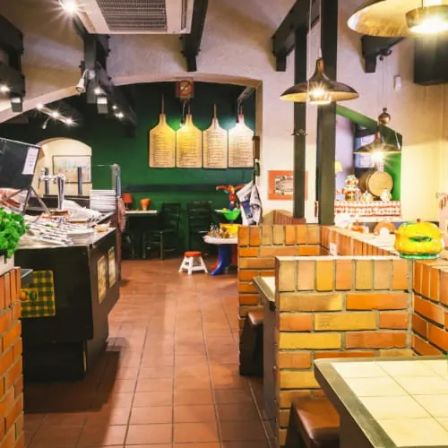
Aperto 1991 · Poznań
Włoska pizza z pieca opalanego drewnem
Od 1991 roku w Poznaniu. Pizza, makarony, zapiekanki da forno i dania z grilla w czterech lokalach: na miejscu, na wynos i z dowozem.
Zamów online
Codziennie od 12:00
nd-czw do 22:00, pt-sob do 23:00
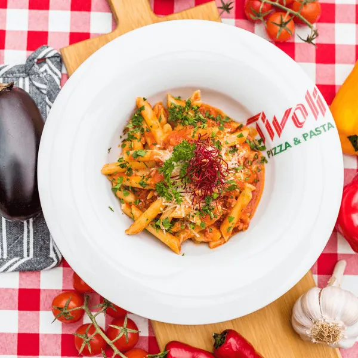
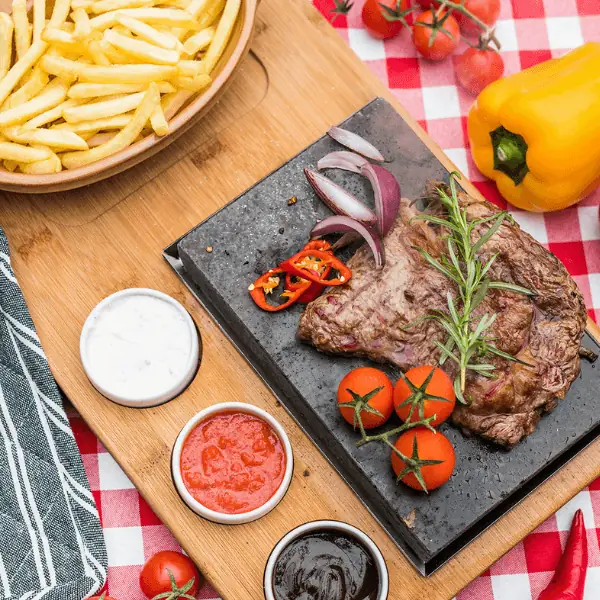
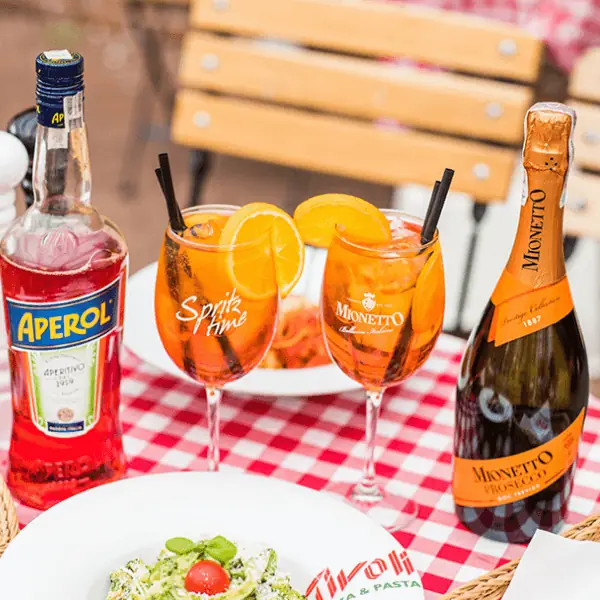
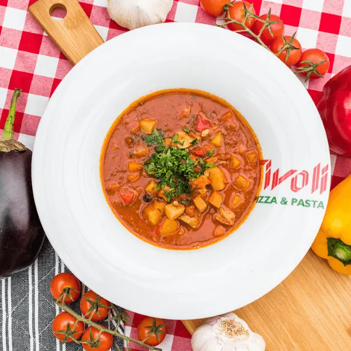
Wybierz swój lokal
Zamówienie online, telefon i rezerwacja stolika - osobno dla każdego lokalu. Wszystkie są czynne codziennie od 12:00.
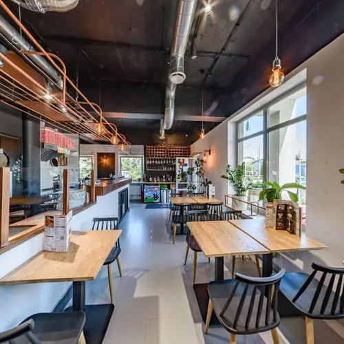
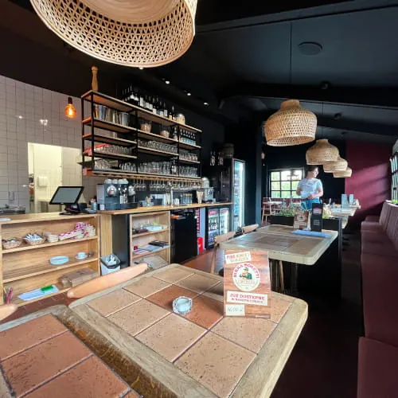
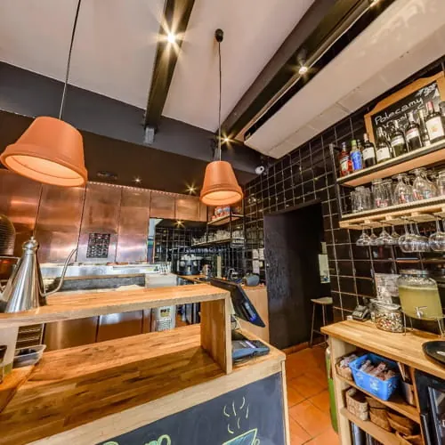
Realizujemy zamówienia na wynos i z dowozem. Strefy dowozu sprawdzisz w aplikacji zamówień, w zakładce z informacjami.
Aperto 1991
W 1991 roku przenieśliśmy słoneczną Italię na ulice Poznania. Pomysł na pizzerię wywodzi się z rodzinnej tradycji, a nazwa z rzymskich ogrodów Tivoli i z ogrodu Tivoli, który w 1856 roku działał w Poznaniu nad Wartą.
- 1991Pierwsza restauracja na ul. Wronieckiej, tuż obok Starego Rynku.
- 1993Tivoli na Wildzie, przy ul. Św. Czesława. Tam stanął pierwszy w Polsce piec do pizzy opalany drewnem.
- 1994Lokal w kinie Apollo i filia w Szklarskiej Porębie.
- 1998Piątkowo, a w kolejnych latach Rataje, Naramowice i ul. Ściegiennego.
- DziśCztery lokale w Poznaniu: Wilda, Naramowice, os. Lecha i os. Przyjaźni.
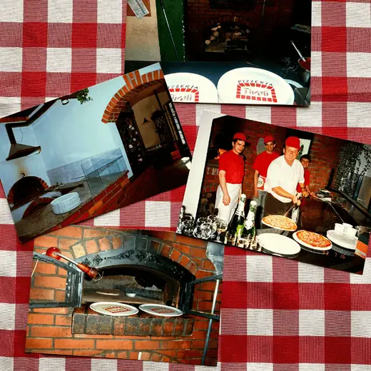
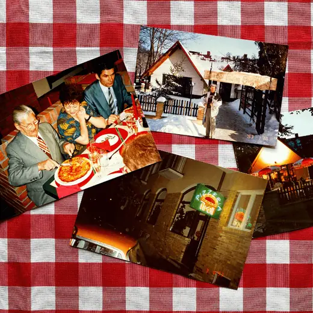
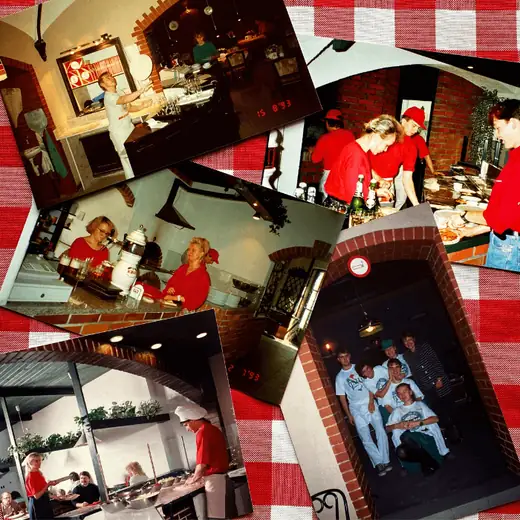
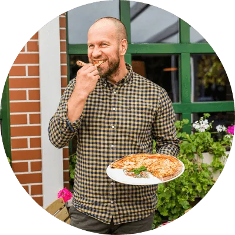
„Staram się poświęcać mojej restauracji całe serce i dbać o Wasze podniebienia każdego dnia. Wszystkie dania przygotowywane są ze składników osobiście przeze mnie dobranych. Buon appetito!”Karol, właściciel Tivoli
Piec na drewno grabowe
Pizzę pieczemy w piecu opalanym drewnem grabowym, cenionym przez Włochów. Stąd jej smak i aromat.
Składniki z Włoch
Dania przygotowujemy zgodnie z włoską tradycją, z naturalnych składników sprowadzanych z Włoch i sezonowych warzyw.
Rustykalne wnętrza
Zapraszamy do lokali urządzonych w ciepłym, rustykalnym stylu, a do domu dowozimy prosto pod drzwi.
Promocje
Aktualne promocje w lokalach Tivoli.
Do 16:00 drugie danie -50%
Rabat naliczany na tańsze danie. Każdego dnia promocja obejmuje inne dania. Nie dotyczy dostaw, szczegóły u obsługi.
Urodzinowa pizza za 10 zł
Promocja obowiązuje w lokalu.
Karta Dużej Rodziny: karafka wody gratis
Promocja obowiązuje w lokalu, przy zamówieniu powyżej 100 zł.
Promocje nie łączą się.
Imprezy i urodzinki
Urodziny, spotkania rodzinne i firmowe przy długim stole oraz warsztaty pieczenia pizzy dla dzieci i dorosłych.
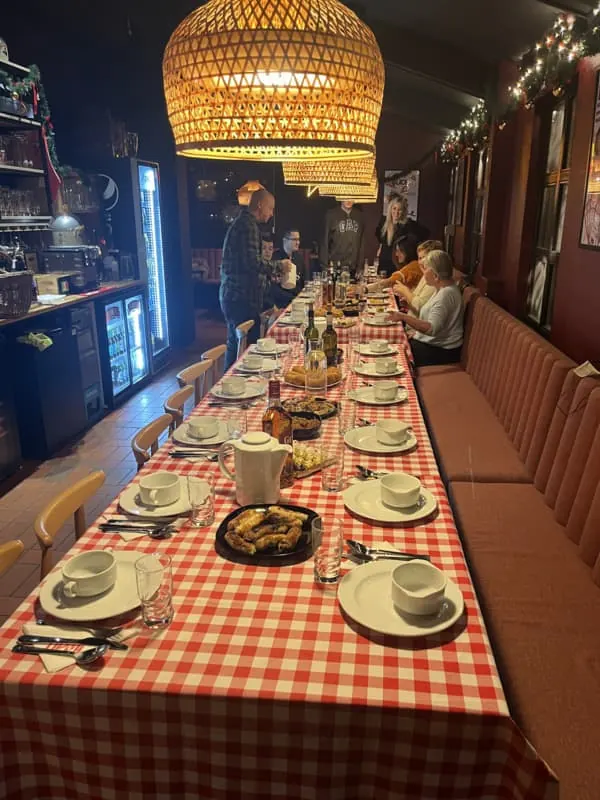
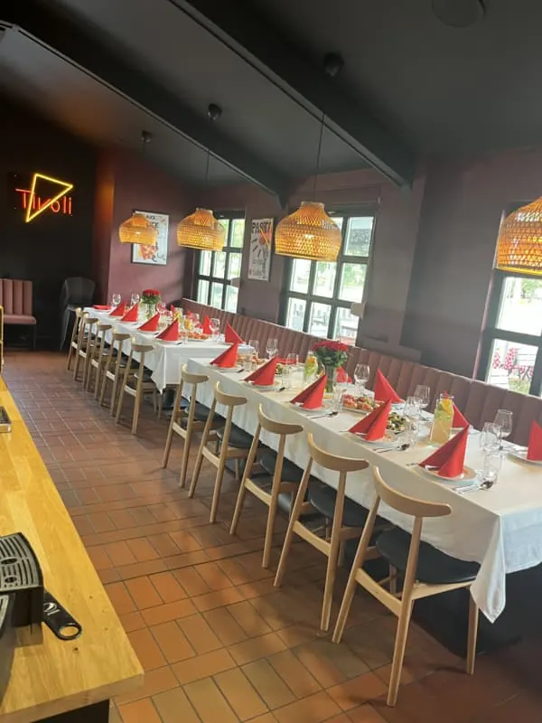
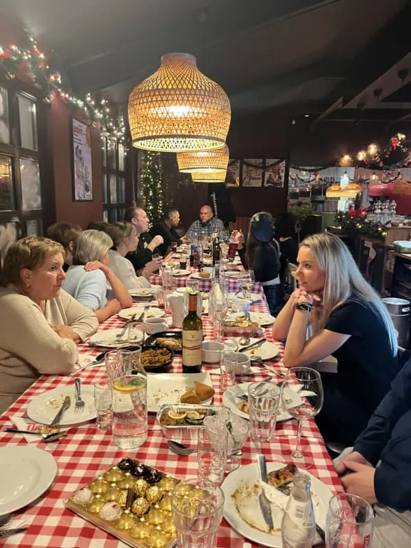
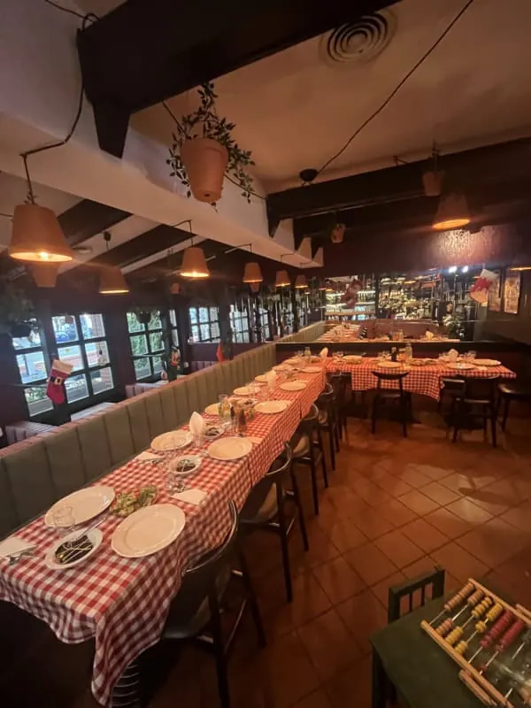
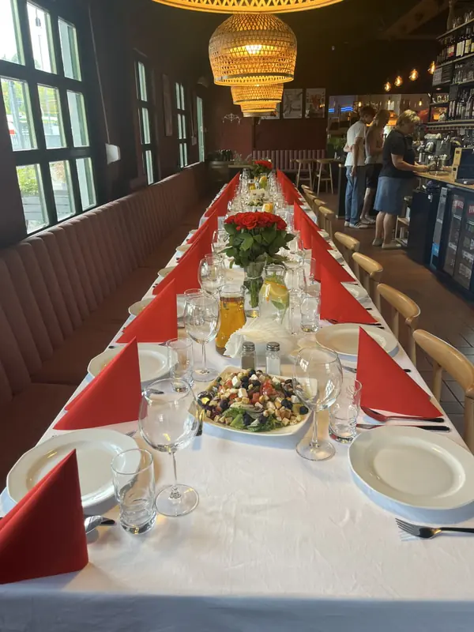
Imprezy okolicznościowe
Urodziny, imprezy okolicznościowe i spotkania biznesowe dla maksymalnie 40 osób, w lokalach os. Lecha 121 i os. Przyjaźni 132 C.
- Dania z karty albo menu ustalone wcześniej, dopasowane do budżetu
- Pełna obsługa i dekoracje, także tematyczne
- Na życzenie zespół grający na żywo
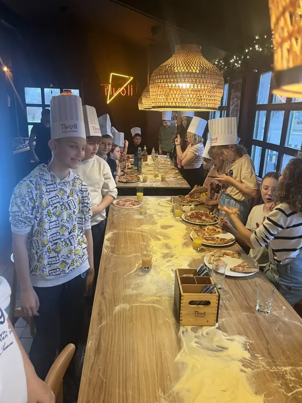
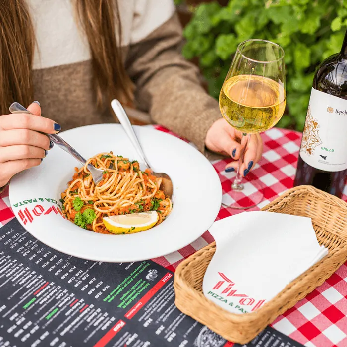
Urodzinki i warsztaty pizzy
Zabawa z wypiekaniem pizzy: jak powinno wyglądać idealne ciasto, ile ma odpoczywać i która mąka sprawdza się najlepiej. Dla solenizantów w każdym wieku, na imprezę firmową albo wycieczkę szkolną.
- Grupy od 6 do 25 osób, dzieci w godzinach 12-14, dorośli w ustalonych godzinach
- W cenie: pizza, fartuszek, czapka kucharska, napój i dyplom
- Każdy formuje, komponuje i piecze własną pizzę
89 złod osoby, dodatkowy poczęstunek do uzgodnienia
Termin imprezy albo warsztatów ustalimy przez telefon.
Zadzwoń: 502 606 939